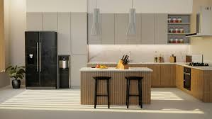

ARTE CULINARIO:
La gastronomía combina ingredientes frescos, tradición y técnicas profesionales para lograr platillos únicos.
SABORES TRADICIONALES:
Aprende a preparar recetas tradicionales paso a paso para disfrutar con toda la familia.
